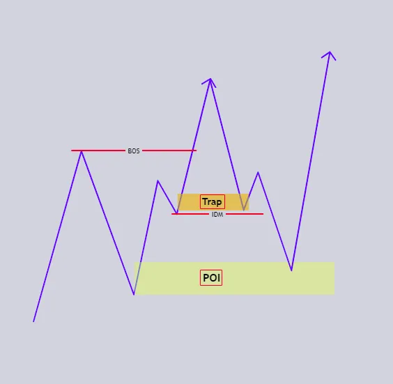

Inducement vs. Break of Structure (BOS)
Bab ini membahas perbedaan krusial antara Inducement (umpan manipulatif) dan Break of Structure (konfirmasi continuation). Banyak trader ritel kehilangan modal karena mengira setiap penembusan level adalah sinyal kelanjutan tren, padahal market sering hanya membuat umpan sebelum bergerak ke arah sebenarnya.
"Pasar tidak bergerak dalam garis lurus; ia bergerak dalam siklus manipulasi dan ekspansi. Inducement adalah umpan yang ditebar untuk menjebak mereka yang terburu-buru, sementara BOS adalah bukti nyata bahwa arus besar sedang bergerak."

Jangan Semua Area Dianggap Tempat Entry
Dalam analisis struktur pasar, dua konsep yang sering membingungkan trader pemula adalah Inducement (IDM) dan Break of Structure (BOS). Keduanya sama-sama terlihat seperti penembusan level harga tertentu, tetapi fungsi dan maknanya sangat berbeda.
Banyak trader ritel kehilangan modal karena mereka mengira setiap penembusan high atau low adalah tanda kelanjutan tren. Padahal sangat sering market hanya sedang membuat umpan agar trader masuk terlalu cepat, sebelum harga bergerak ke arah yang sebenarnya.
Masalah yang sering terjadi adalah di sinilah trader mulai belajar membedakan:
- mana break yang benar-benar melanjutkan struktur
- mana break yang hanya dipakai market untuk mengambil liquidity
- mana level yang punya bobot struktural
- mana level yang hanya dipakai sebagai jebakan psikologis
Kalau trader tidak memahami perbedaan ini, mereka akan sangat mudah:
- FOMO saat breakout kecil
- entry terlalu cepat
- mengira continuation padahal market baru mau retrace
- atau terus masuk di posisi yang justru sedang dijadikan liquidity
Bab ini juga sangat erat hubungannya dengan istilah glosarium utama seperti:
- BOS
- Inducement
- Liquidity Sweep
- Internal Liquidity
- External Liquidity
- Protected High / Protected Low
- Trend Structure
- Draw on Liquidity
1. Apa Itu Break of Structure (BOS)?
Break of Structure (BOS) adalah penembusan struktur yang searah dengan tren utama yang sedang berjalan.
Sederhananya:
- kalau market bullish, BOS terjadi saat harga berhasil menembus high penting dan melanjutkan arah naik
- kalau market bearish, BOS terjadi saat harga berhasil menembus low penting dan melanjutkan arah turun
Jadi BOS adalah bukti bahwa struktur lama masih berlanjut.
Contoh Bullish BOS
- market membentuk HH dan HL
- harga retrace sebentar
- lalu naik lagi menembus high sebelumnya
- itu menunjukkan buyer masih dominan
Contoh Bearish BOS
- market membentuk LH dan LL
- harga rally kecil
- lalu turun lagi menembus low sebelumnya
- itu menunjukkan seller masih dominan
Dalam glosarium, BOS adalah: penembusan struktur yang searah dengan tren saat ini.
Artinya BOS lebih dekat dengan:
- continuation
- konfirmasi arah dominan
- bukti bahwa trend structure masih sehat
2. Apa Itu Inducement?
Inducement adalah pergerakan harga yang dirancang untuk menggoda trader masuk terlalu cepat sebelum market bergerak ke arah sebenarnya.
Sederhananya:
- market menunjukkan level kecil yang tampak penting
- trader mengira itu sinyal besar
- mereka bereaksi terlalu cepat
- order mereka dipakai sebagai liquidity
- lalu market bergerak ke target yang lebih besar
Inducement sering berbentuk:
- high kecil yang tampak seperti BOS
- low kecil yang tampak seperti break valid
- struktur internal yang kelihatan penting padahal bukan target utama
- sweep kecil sebelum retracement lebih dalam
- break minor yang memancing FOMO
Jadi Inducement bukan sekadar level.
Inducement adalah umpan.
3. Bedanya BOS dan Inducement
Inilah inti bab ini.
BOS
- melanjutkan struktur utama
- searah dengan arah dominan
- menembus level yang relevan
- biasanya punya konteks continuation yang jelas
Inducement
- memancing trader bereaksi terlalu cepat
- sering muncul pada struktur minor
- sering berada di Internal Liquidity
- sering terjadi sebelum market menuju POI atau target liquidity yang lebih besar
Jadi walaupun dua-duanya sama-sama terlihat seperti "break", niat market di baliknya sangat berbeda.
Patokan Cepat Saat Melihat Area
Patokan singkat:
- *Tujuan — Inducement (IDM): Mengambil liquidity / menjebak trader | Break of Structure (BOS):* Melanjutkan tren
- *Lokasi Umum — Inducement (IDM): Struktur internal / minor | Break of Structure (BOS):* Struktur eksternal / mayor
- *Fungsi — Inducement (IDM): Umpan sebelum gerakan utama | Break of Structure (BOS):* Konfirmasi continuation
- *Dampak Setelahnya — Inducement (IDM): Harga sering berbalik atau retrace | Break of Structure (BOS):* Harga cenderung lanjut searah
- *Psikologi Ritel — Inducement (IDM): FOMO, masuk terlalu cepat | Break of Structure (BOS):* Lebih selaras dengan arah dominan
- *Hubungan dengan liquidity — Inducement (IDM): Sering berada di Internal Liquidity | Break of Structure (BOS):* Sering mengarah ke External Liquidity berikutnya
Tabel ini penting karena banyak trader pemula hanya fokus ke bentuk visual "break", padahal market selalu punya konteks di balik penembusan itu.
5. BOS yang Valid Itu Seperti Apa?
Agar BOS tidak tertukar dengan Inducement, trader perlu tahu ciri BOS yang lebih sehat.
a. Terjadi Searah dengan Struktur
Kalau market bullish, BOS bullish lebih logis.
Kalau market bearish, BOS bearish lebih logis.
b. Menembus Level yang Relevan
Bukan hanya high atau low kecil sembarangan, tetapi level yang memang penting dalam struktur.
c. Didukung Tenaga
BOS yang sehat sering punya:
- body candle yang jelas
- displacement
- atau minimal continuation yang rapi
d. Tidak Langsung Gagal
Setelah break terjadi, market tidak langsung kehilangan arah atau masuk lagi ke area lama.
Jadi BOS yang valid bukan hanya "harga lewat".
BOS yang valid adalah penembusan yang masuk akal di dalam narasi tren.
6. Inducement Sering Terjadi di Internal Structure
Ini poin yang sangat penting.
Inducement sangat sering muncul di:
- minor swing
- struktur kecil di dalam retracement
- high/low kecil di tengah perjalanan
- area yang berada di dalam trading range
- Internal Liquidity yang tampak penting padahal bukan target utama
Contohnya:
- market bullish
- harga retrace
- lalu naik sedikit menembus high kecil di dalam retracement
- trader mengira BOS bullish sudah terjadi
- mereka langsung buy
- ternyata market justru turun lebih dalam ke discount atau ke POI yang sesungguhnya
Di sini high kecil tadi berfungsi sebagai:
- Inducement
- Internal Liquidity
- umpan psikologis
7. Mekanisme Kerja Inducement
Agar lebih mudah dipahami, lihat Inducement sebagai bagian dari urutan ini:
- market masih punya target yang lebih besar
- sebelum menuju target itu, market membentuk level kecil
- level kecil ini terlihat menarik
- trader bereaksi terlalu cepat
- order mereka menjadi liquidity
- market lalu bergerak ke arah aslinya
Jadi Inducement sering bukan tujuan akhir, tetapi alat market untuk mengumpulkan order.
Dalam glosarium, ini sangat dekat dengan:
- Liquidity Build
- Liquidity Trap
- Liquidity Fakeout
- Liquidity Deception
Walaupun istilah-istilah itu tidak harus selalu dipakai sekaligus, semangatnya sama: market tidak selalu menunjukkan niat aslinya sejak awal.
8. Hubungan Inducement dengan Internal dan External Liquidity
Bab sebelumnya membahas:
- Internal Liquidity = target kecil di dalam range
- External Liquidity = target besar di luar range
Inducement sangat sering berada di Internal Liquidity.
Kenapa? Karena market sering menggunakan target kecil internal dulu untuk:
- memancing entry
- mengambil Stop Loss
- membentuk ilusi continuation
- baru setelah itu menuju target external yang sebenarnya
Contoh:
- market bearish
- ada BSL kecil internal di atas
- trader melihat break kecil lalu buy
- market menyapu BSL itu
- lalu turun ke old low besar di bawah
Di sini:
- BSL kecil = Inducement + Internal Liquidity
- old low besar = External Liquidity + tujuan utama
Jadi trader yang tidak paham ini akan tertipu dua kali:
- salah mengira Inducement sebagai BOS
- salah mengira target kecil sebagai target akhir
9. BOS dan Protected High / Protected Low
BOS yang berkualitas biasanya lebih berkaitan dengan struktur yang memang relevan.
Dalam bullish trend:
- protected low membantu membaca batas pertahanan buyer
- BOS bullish yang sehat biasanya muncul saat market berhasil menjaga protected low lalu menembus high relevan berikutnya
Dalam bearish trend:
- protected high membantu membaca batas pertahanan seller
- BOS bearish yang sehat biasanya muncul saat market berhasil menjaga protected high lalu menembus low relevan berikutnya
Artinya, BOS bukan sekadar break acak, tetapi bagian dari struktur yang memang masih dijaga.
10. Cara Membedakan: Ini Inducement atau BOS?
Agar lebih rapi, gunakan pertanyaan berikut:
Tanya 1: Level yang ditembus ini minor atau mayor?
Kalau hanya minor, peluang itu Inducement lebih besar.
Tanya 2: Break ini terjadi di dalam range atau di tepi struktur?
Kalau masih di dalam range aktif, hati-hati. Bisa jadi hanya internal move.
Tanya 3: Arah break ini searah dengan trend mayor atau tidak?
Kalau melawan struktur besar tanpa konteks kuat, jangan buru-buru percaya.
Tanya 4: Setelah break, market lanjut atau malah retrace dalam?
Kalau break langsung gagal dan market menuju POI lain, besar kemungkinan itu Inducement.
Tanya 5: Apakah market sedang menuju External Liquidity yang lebih besar?
Kalau iya, break kecil tadi mungkin hanya umpan.
11. Contoh Skenario Bullish
Skenario BOS Bullish
- market bullish
- struktur mayor membentuk HH dan HL
- harga retrace sehat
- lalu menembus high relevan sebelumnya
- ada continuation
- target di atas masih terbuka
Kesimpulan: ini lebih layak dibaca sebagai BOS bullish.
Skenario Inducement Bullish Palsu
- market bullish, tetapi masih retrace
- harga menembus high kecil di internal structure
- trader mengira continuation sudah dimulai
- mereka buy terlalu cepat
- ternyata market turun lagi ke FVG atau OB yang lebih dalam
- baru setelah itu arah naik sesungguhnya dimulai
Kesimpulan: break kecil tadi lebih dekat ke Inducement, bukan BOS utama.
12. Contoh Skenario Bearish
Skenario BOS Bearish
- market bearish
- struktur mayor membentuk LH dan LL
- harga rally kecil
- lalu menembus low penting ke bawah
- seller tetap dominan
- harga lanjut ke target bawah berikutnya
Kesimpulan: ini BOS bearish.
Skenario Inducement Bearish Palsu
- market bearish, tapi sedang pullback
- harga turun sedikit menembus low kecil
- trader mengira continuation bearish sudah dimulai
- mereka sell terlalu cepat
- ternyata market naik dulu mengambil BSL internal
- baru setelah itu turun ke target utama
Kesimpulan: low kecil tadi kemungkinan Inducement.
13. Inducement dan FOMO
Secara psikologis, Inducement sangat erat dengan FOMO.
Trader melihat:
- level kecil ditembus
- harga mulai bergerak
- takut ketinggalan
- langsung entry tanpa sabar
Market sangat sering memanfaatkan reaksi ini.
Karena itu memahami Inducement bukan hanya soal struktur, tetapi juga soal disiplin:
- tidak semua break harus dikejar
- tidak semua momentum kecil harus ditanggapi
- kadang yang paling aman justru menunggu market selesai menunjukkan umpannya
14. Kesalahan Umum Trader
1) Menganggap semua break adalah BOS
Padahal banyak break hanya Inducement.
2) Tidak membedakan internal structure dan major structure
Akibatnya trader terlalu mudah tertipu level kecil.
3) Masuk terlalu cepat karena FOMO
Padahal market belum selesai membangun posisi.
4) Tidak melihat target liquidity yang lebih besar
Trader berhenti di target kecil, padahal market masih punya External Liquidity di depan.
5) Tidak sabar menunggu Inducement selesai
Padahal sering kali entry terbaik justru muncul setelah market selesai menjebak.
- Inducement (IDM): Pergerakan harga manipulatif untuk memancing trader masuk terlalu cepat.
- BOS (Break of Structure): Penembusan struktur yang searah dengan tren utama.
- Internal Structure: Struktur kecil yang berada di dalam rentang atau leg yang lebih besar.
- Internal Liquidity: liquidity kecil di dalam struktur aktif, sering menjadi tempat Inducement muncul.
- External Liquidity: liquidity besar di luar struktur aktif, sering menjadi tujuan utama market.
- Liquidity Trap: Jebakan liquidity yang membuat trader masuk di posisi yang salah.
- Liquidity Fakeout: Penembusan palsu yang tampak valid kalau dilihat sekilas tetapi tidak punya fondasi continuation.
- FOMO (Fear Of Missing Out): Ketakutan ketinggalan peluang yang membuat trader masuk tanpa rencana.
- Tidak semua penembusan level adalah sinyal continuation.
- Inducement adalah umpan untuk mengambil liquidity.
- BOS adalah konfirmasi bahwa tren masih berlanjut.
- Inducement sering muncul di internal structure dan Internal Liquidity.
- BOS yang sehat lebih dekat dengan struktur relevan dan continuation yang nyata.
- Trader yang sabar menunggu Inducement selesai akan jauh lebih aman daripada trader yang mengejar setiap break kecil.
Dengan menguasai perbedaan antara Inducement dan BOS, kamu tidak lagi menjadi "makanan" bagi market. Kamu mulai melihat pergerakan harga sebagai permainan strategi, bukan sekadar garis yang ditembus. Dari sinilah trader mulai berubah: dari pemburu break kecil menjadi pembaca struktur yang lebih tenang, sabar, dan objektif.